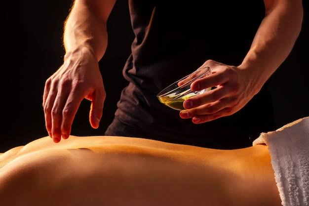
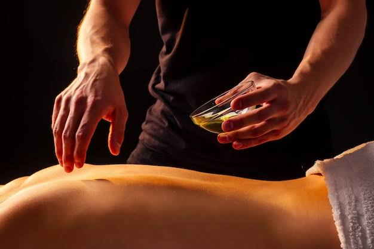
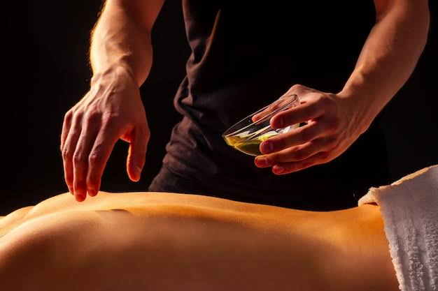
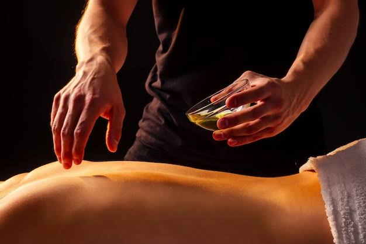

 

Panchakarma is a traditional Ayurvedic detoxification and rejuvenation therapy that has been practiced for thousands of years in India. It is a Sanskrit term that translates to "five actions" or "five treatments, " where "pancha" means five, and "karma" means action. Panchakarma is a holistic approach to cleansing and balancing the body, mind, and spirit.
The primary goal of Panchakarma is to remove accumulated toxins (ama) from the body and restore the body's natural balance (dosha equilibrium) by utilizing a combination of therapeutic treatments, dietary adjustments, and lifestyle changes. It is often used for preventive healthcare as well as the treatment of various chronic diseases and imbalances.
1) Detoxification: Panchakarma is primarily used to detoxify the body. Over time, due to poor diet, lifestyle choices, environmental factors, and stress, toxins or "ama" can accumulate in the body. Panchakarma helps in eliminating these toxins, promoting better overall health.
2) Balancing Doshas: Ayurveda recognizes three primary doshas (Vata, Pitta, and Kapha) that govern an individual's physiological and psychological characteristics. Imbalances in these doshas can lead to various health issues. Panchakarma treatments are customized to balance these doshas and restore harmony to the body.
3) Disease Management: Panchakarma is often used as a complementary therapy for managing chronic diseases and conditions such as arthritis, digestive disorders, skin problems, autoimmune diseases, and more. By reducing dosha imbalances and removing toxins, it can support the healing process.
4) Stress Reduction: Panchakarma therapies are known for their calming and relaxing effects. They can help reduce stress, anxiety, and promote mental clarity. Nasya, for example, is used to clear the mind and improve sensory perception.
5) Weight Management: Panchakarma can be a part of a holistic weight management plan. By improving digestion, metabolism, and reducing toxins, it may help with weight loss and maintenance.
6) Improved Digestion: Many Panchakarma therapies, such as Vamana and Virechana, are specifically designed to improve digestive functions. They can help with issues like indigestion, bloating, and irregular bowel movements.
7) Enhanced Immunity: Panchakarma aims to strengthen the body's natural defense mechanisms. A clean and balanced system is better equipped to fight off infections and illnesses.
8) Rejuvenation and Longevity: Some individuals seek Panchakarma for its rejuvenating effects. It is believed to slow down the aging process and promote longevity by maintaining optimal health and vitality.
9) Preventive Care: Panchakarma can also be used as a preventive measure to maintain overall well-being and prevent diseases from occurring in the first place.